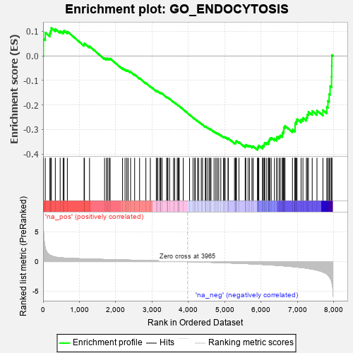
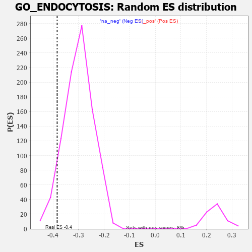

| | | Dataset | 7d |
| Phenotype | NoPhenotypeAvailable |
| Upregulated in class | na_neg |
| GeneSet | GO_ENDOCYTOSIS |
| Enrichment Score (ES) | -0.38348287 |
| Normalized Enrichment Score (NES) | -1.2798295 |
| Nominal p-value | 0.07475623 |
| FDR q-value | 0.49814692 |
| FWER p-Value | 1.0 |
Table: GSEA Results Summary

Fig 1: Enrichment plot: GO_ENDOCYTOSIS
Profile of the Running ES Score & Positions of GeneSet Members on the Rank Ordered List
| PROBE | GENE SYMBOL | GENE_TITLE | RANK IN GENE LIST | RANK METRIC SCORE | RUNNING ES | CORE ENRICHMENT | | 1 | SYT2 | | | 8 | 5.577 | 0.0702 | No |
| 2 | RAC2 | | | 60 | 2.442 | 0.0949 | No |
| 3 | DNER | | | 188 | 1.098 | 0.0928 | No |
| 4 | RHOU | | | 210 | 1.031 | 0.1033 | No |
| 5 | RHOH | | | 228 | 0.987 | 0.1137 | No |
| 6 | DLL1 | | | 337 | 0.760 | 0.1097 | No |
| 7 | LRP1 | | | 470 | 0.648 | 0.1011 | No |
| 8 | JMJD6 | | | 553 | 0.613 | 0.0985 | No |
| 9 | MX1 | | | 578 | 0.604 | 0.1031 | No |
| 10 | LRP1B | | | 668 | 0.570 | 0.0991 | No |
| 11 | SRC | | | 1128 | 0.459 | 0.0464 | No |
| 12 | ATP9B | | | 1139 | 0.456 | 0.0509 | No |
| 13 | LOXL4 | | | 1278 | 0.434 | 0.0389 | No |
| 14 | HYOU1 | | | 1692 | 0.358 | -0.0092 | No |
| 15 | PI4KB | | | 1747 | 0.346 | -0.0117 | No |
| 16 | LRP5 | | | 1769 | 0.342 | -0.0100 | No |
| 17 | FMR1 | | | 1816 | 0.334 | -0.0116 | No |
| 18 | AP2S1 | | | 1846 | 0.329 | -0.0111 | No |
| 19 | SYK | | | 2186 | 0.278 | -0.0507 | No |
| 20 | REPS1 | | | 2255 | 0.267 | -0.0560 | No |
| 21 | WASF1 | | | 2303 | 0.259 | -0.0587 | No |
| 22 | ANO6 | | | 2339 | 0.255 | -0.0599 | No |
| 23 | BTBD9 | | | 2407 | 0.245 | -0.0653 | No |
| 24 | NUMB | | | 2519 | 0.224 | -0.0766 | No |
| 25 | XKR6 | | | 2655 | 0.205 | -0.0912 | No |
| 26 | BECN1 | | | 2828 | 0.179 | -0.1108 | No |
| 27 | RAB17 | | | 2950 | 0.157 | -0.1242 | No |
| 28 | SYT8 | | | 3115 | 0.135 | -0.1434 | No |
| 29 | MTMR2 | | | 3126 | 0.133 | -0.1430 | No |
| 30 | RAB4B | | | 3157 | 0.129 | -0.1452 | No |
| 31 | AP1G1 | | | 3210 | 0.121 | -0.1503 | No |
| 32 | SYNRG | | | 3230 | 0.117 | -0.1512 | No |
| 33 | FCHO2 | | | 3238 | 0.115 | -0.1506 | No |
| 34 | SNX17 | | | 3272 | 0.110 | -0.1534 | No |
| 35 | AAK1 | | | 3400 | 0.089 | -0.1685 | No |
| 36 | EHBP1 | | | 3419 | 0.087 | -0.1697 | No |
| 37 | AP2A2 | | | 3433 | 0.085 | -0.1702 | No |
| 38 | CDK5 | | | 3480 | 0.080 | -0.1751 | No |
| 39 | MAPK3 | | | 3589 | 0.062 | -0.1881 | No |
| 40 | CBL | | | 3621 | 0.056 | -0.1913 | No |
| 41 | EPN2 | | | 3691 | 0.045 | -0.1995 | No |
| 42 | AMPH | | | 3715 | 0.040 | -0.2019 | No |
| 43 | SYT11 | | | 3732 | 0.036 | -0.2035 | No |
| 44 | HTR1B | | | 3745 | 0.035 | -0.2046 | No |
| 45 | DGKQ | | | 3856 | 0.020 | -0.2184 | No |
| 46 | TOR1A | | | 4030 | -0.013 | -0.2403 | No |
| 47 | ABL1 | | | 4125 | -0.027 | -0.2519 | No |
| 48 | SYNJ1 | | | 4173 | -0.038 | -0.2574 | No |
| 49 | AP2B1 | | | 4185 | -0.039 | -0.2583 | No |
| 50 | GAK | | | 4249 | -0.050 | -0.2657 | No |
| 51 | FNBP1 | | | 4279 | -0.056 | -0.2687 | No |
| 52 | ADRB2 | | | 4352 | -0.068 | -0.2770 | No |
| 53 | MTMR9 | | | 4387 | -0.074 | -0.2804 | No |
| 54 | XKR4 | | | 4466 | -0.087 | -0.2893 | No |
| 55 | LRRK2 | | | 4467 | -0.087 | -0.2881 | No |
| 56 | HIP1 | | | 4485 | -0.092 | -0.2891 | No |
| 57 | RIN2 | | | 4535 | -0.101 | -0.2941 | No |
| 58 | VPS28 | | | 4582 | -0.114 | -0.2985 | No |
| 59 | SYT4 | | | 4590 | -0.116 | -0.2979 | No |
| 60 | RAB21 | | | 4620 | -0.122 | -0.3000 | No |
| 61 | ARF6 | | | 4704 | -0.140 | -0.3088 | No |
| 62 | RAB5C | | | 4752 | -0.149 | -0.3129 | No |
| 63 | CD151 | | | 4791 | -0.156 | -0.3158 | No |
| 64 | BIN3 | | | 4832 | -0.165 | -0.3188 | No |
| 65 | CLU | | | 4889 | -0.174 | -0.3237 | No |
| 66 | SNX2 | | | 4966 | -0.191 | -0.3309 | No |
| 67 | ACKR4 | | | 4981 | -0.194 | -0.3303 | No |
| 68 | RIN3 | | | 5010 | -0.199 | -0.3313 | No |
| 69 | DRD2 | | | 5088 | -0.221 | -0.3383 | No |
| 70 | ITSN1 | | | 5094 | -0.222 | -0.3361 | No |
| 71 | PICK1 | | | 5265 | -0.263 | -0.3544 | No |
| 72 | MAGI2 | | | 5295 | -0.269 | -0.3546 | No |
| 73 | RAB7A | | | 5302 | -0.271 | -0.3519 | No |
| 74 | EPN1 | | | 5304 | -0.272 | -0.3486 | No |
| 75 | CD9 | | | 5319 | -0.277 | -0.3468 | No |
| 76 | DLG4 | | | 5388 | -0.293 | -0.3518 | No |
| 77 | EHD1 | | | 5560 | -0.336 | -0.3693 | No |
| 78 | FOLR2 | | | 5563 | -0.336 | -0.3652 | No |
| 79 | SPHK1 | | | 5576 | -0.339 | -0.3624 | No |
| 80 | LRP12 | | | 5639 | -0.358 | -0.3658 | No |
| 81 | CD63 | | | 5680 | -0.370 | -0.3661 | No |
| 82 | MX2 | | | 5745 | -0.390 | -0.3693 | No |
| 83 | VAMP7 | | | 5777 | -0.399 | -0.3682 | No |
| 84 | VLDLR | | | 5898 | -0.434 | -0.3779 | Yes |
| 85 | DOCK1 | | | 5908 | -0.438 | -0.3735 | Yes |
| 86 | RAB4A | | | 5919 | -0.441 | -0.3691 | Yes |
| 87 | CAP1 | | | 5935 | -0.447 | -0.3653 | Yes |
| 88 | RAC1 | | | 6036 | -0.484 | -0.3719 | Yes |
| 89 | PPT1 | | | 6038 | -0.485 | -0.3658 | Yes |
| 90 | CALR | | | 6077 | -0.499 | -0.3643 | Yes |
| 91 | DBNL | | | 6084 | -0.501 | -0.3587 | Yes |
| 92 | AP3M1 | | | 6100 | -0.506 | -0.3541 | Yes |
| 93 | ROCK1 | | | 6152 | -0.520 | -0.3540 | Yes |
| 94 | MYO1E | | | 6200 | -0.537 | -0.3531 | Yes |
| 95 | INSR | | | 6204 | -0.538 | -0.3466 | Yes |
| 96 | EHD4 | | | 6227 | -0.545 | -0.3424 | Yes |
| 97 | CDC42 | | | 6236 | -0.548 | -0.3365 | Yes |
| 98 | FLOT1 | | | 6276 | -0.564 | -0.3342 | Yes |
| 99 | NPC1 | | | 6364 | -0.602 | -0.3376 | Yes |
| 100 | EEA1 | | | 6430 | -0.631 | -0.3378 | Yes |
| 101 | ABCA2 | | | 6433 | -0.634 | -0.3300 | Yes |
| 102 | WDR54 | | | 6491 | -0.658 | -0.3289 | Yes |
| 103 | VAMP2 | | | 6525 | -0.672 | -0.3245 | Yes |
| 104 | CLN3 | | | 6580 | -0.699 | -0.3224 | Yes |
| 105 | ARF1 | | | 6583 | -0.701 | -0.3137 | Yes |
| 106 | TUB | | | 6611 | -0.718 | -0.3080 | Yes |
| 107 | SCYL2 | | | 6621 | -0.724 | -0.2999 | Yes |
| 108 | CUBN | | | 6624 | -0.727 | -0.2909 | Yes |
| 109 | RAB5A | | | 6655 | -0.741 | -0.2852 | Yes |
| 110 | AHI1 | | | 6860 | -0.848 | -0.3004 | Yes |
| 111 | SNX33 | | | 6930 | -0.888 | -0.2978 | Yes |
| 112 | LRP8 | | | 6931 | -0.889 | -0.2865 | Yes |
| 113 | MIB1 | | | 6932 | -0.890 | -0.2751 | Yes |
| 114 | DNM1L | | | 6963 | -0.913 | -0.2673 | Yes |
| 115 | RUFY2 | | | 6986 | -0.927 | -0.2582 | Yes |
| 116 | RAB1A | | | 7096 | -0.993 | -0.2595 | Yes |
| 117 | SYT1 | | | 7148 | -1.033 | -0.2528 | Yes |
| 118 | ABCA1 | | | 7243 | -1.113 | -0.2505 | Yes |
| 119 | ENDOU | | | 7268 | -1.139 | -0.2390 | Yes |
| 120 | ANK2 | | | 7298 | -1.170 | -0.2278 | Yes |
| 121 | LOXL2 | | | 7403 | -1.269 | -0.2248 | Yes |
| 122 | CD22 | | | 7534 | -1.449 | -0.2229 | Yes |
| 123 | MYO6 | | | 7697 | -1.753 | -0.2211 | Yes |
| 124 | PGBD1 | | | 7803 | -2.067 | -0.2081 | Yes |
| 125 | GRIA1 | | | 7836 | -2.260 | -0.1833 | Yes |
| 126 | CALM3 | | | 7869 | -2.525 | -0.1551 | Yes |
| 127 | CAV3 | | | 7896 | -2.739 | -0.1234 | Yes |
| 128 | ARRB1 | | | 7935 | -3.377 | -0.0851 | Yes |
| 129 | MRC1 | | | 7940 | -3.475 | -0.0412 | Yes |
| 130 | MRC2 | | | 7944 | -3.526 | 0.0034 | Yes |
Table: GSEA details [plain text format]

Fig 2: GO_ENDOCYTOSIS: Random ES distribution
Gene set null distribution of ES for GO_ENDOCYTOSIS